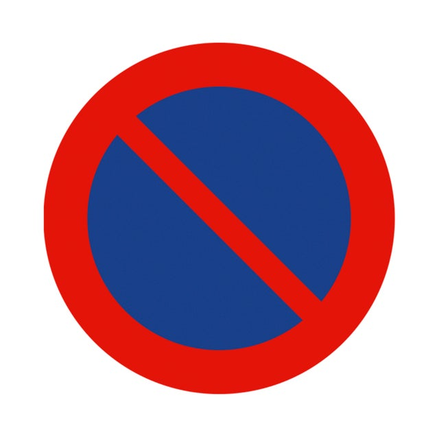
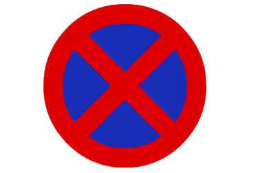

Esta señal:
Indica la prohibición de realizar una parada, mientras que esta señal:
Indica la prohibición de realizar un estacionamiento.
La lógica está en que, si observas una señal de prohibición de estacionar y luego una señal de prohibición de parar y estacionar:
La diferencia se encuentra en que se añade una línea roja oblicua hacia la derecha, lo cual implica que esa línea representa la prohibición de parada.
Ante una señal de prohibición de parada, el conductor puede inmovilizar su vehículo, pero debe asegurarse de que dicha inmovilización termine considerándose como estacionamiento. Es decir, debe superar los 2 minutos, o abandonar el vehículo.
Siguiente pregunta